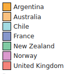
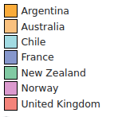

L'Antarctique
Un sujet bien trop vaste pour cette courte page... qui à défaut de constituer même une introduction suffisante à la question, se contentera de présenter quelques éléments d'information sur ce continent si beau, et si intéressant.
{kind=link}
Un petit peu d'histoire
Longtemps fantasmée - l'existence potentielle d'une Terra Australis intrigue depuis l'Antiquité - cette terre, dépourvue de population autochtone, n'a été découverte, et explorée, que très tardivement : il faut en effet attendre le XIXe siècle pour qu'elle soit seulement aperçue pour la première fois. Si la découverte suscite dans un premier temps surtout l'intérêt des chasseurs de phoques, elle finira par déclencher, à la fin du siècle, une véritable course internationale à l'exploration de ce territoire hostile, repoussant toujours plus loin sa limite connue, jusqu'au lointain Pôle Sud...
Parmi les moments et personnages marquants, mentionnons :
- Janvier 1820 : deux équipages indépendants, menés par Fabian von Bellingshausen et Edward Bransfield aperçoivent la côte Antarctique, à trois jours d'intervalle, en faisant les premiers découvreurs officiels.
- 1840 : découverte par l'explorateur Jules Dumont d'Urville de la Terre Adélie, puis en 1841 celle par James Clark Ross de la Terre Victoria
- 1894 : premier débarquement, par le norvégien Carsten Borchgrevink
- 1897 : premier hivernage (expédition Belgica de Adrien de Gerlache)
- 1903 : fondation de la première base antacrtique, par la marine Ecossaise
- 14 décembre 1911 : Roald Amundsen atteint le pôle Sud. Robert Scott, ouvertement en compétition pour le même objectif, l'atteindra 30 jours plus tard ; il meure, avec les quatres membres de son équipe, sur le chemin du retour.
- 1957 : première traversée terrestre du continent, par Vivian Ernest Fuchs et Edmund Hillary (peu de temps après avoir réalisé la première ascension de l'Everest avec Tensing Norgay)
- 1959 : signature du Traité de l'Antarctique, qui réserve le continent à des activités purement pacifiques
- 1993 : Erling Kagge atteint le pôle sud en solitaire, et sans assistance...
Sans oublier bien sûr le sauvetage miraculeux de l'équipage de l'Endurance de Ernest Henry Shackleton, et les expéditions scientifiques de Jean-Baptiste Charcot.
Mais à qui appartient l'Antarctique ?
À vrai dire... à personne. À moins que ça ne soit plutôt à tout le monde ? La réalité est comme souvent un peu plus compliquée. Le Royaume-Uni émet en 1908 la première revendication territoriale sur le continent ; elle sera suivie, au cours des décennies suivantes, par 6 autres états. Ces revendications, qui se chevauchent parfois, restent en suspens jusqu'en 1959 et la signature du Traité de l'Antarctique. Négocié en pleine guerre froide, celui-ci fait du territoire un bien commun de l'humanité, prohibe toute militarisation ou nucléarisation de la région, et affirme l'importance d'y exercer uniquement des activités pacifiques et de respecter la liberté de recherche scientifique.
Les prétentions territoriales ne sont pas pour autant abandonnées mais gelées, sous la forme d'un découpage en fuseaux :
 

Pour en savoir plus...
Pour finir, quelques ressources intéressantes sur le sujet :
- Le site de l'Institut Polaire Français contient de nombreuses informations sur la région dans son ensemble, ainsi que sur les bases françaises et les recherches scientifiques associées.
- Un article paru dans le journal du CRNS sur les enjeux géopolitiques des pôles.
- Un récit plus détaillé de la "conquête du pôle sud", par la RTS.
À voir également, une bonne synthèse de CGP Grey sur les revendications, et le statut ambigü des territoires antarctiques :